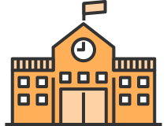
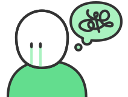
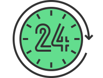
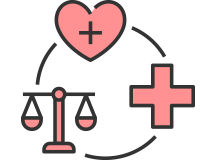
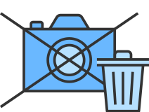
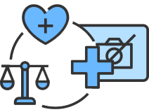
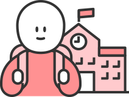

서울특별시교육청 학교 성폭력 온라인 신고센터
신고하기
가상신고
대응가이드
1 상황 인식하기
2 도움받을 곳 찾기
3 해결 방법 선택하기
4 신고하고 처리하기
5 다시 일상으로
2 도움받을 곳 찾기
도움받을 곳 찾기
성폭력을 해결하는 과정에서
버팀목이 될 수 있는 곳들이 있습니다.
나에게 필요한 도움이 무엇인지를 선택해주세요.
도움 받을 수 있는 기관을 알려드리겠습니다.
어떤 도움이 필요한가요?
학교 선생님께
도움을 받고
싶어요

교육청 전문가에게
도움을 받고
싶어요
방금 전
피해를 입었고
빨리 대응하고
싶어요
당장 병원에
가봐야 할 것
같아요
마음이
너무 힘들어서
긴급 상담을
받고 싶어요

지금이 밤·새벽인데
도움이 필요해요

심리·법률·의료 지원을
종합적으로
받고 싶어요

불법촬영 영상을
삭제하고 싶어요

디지털 성폭력에 대해
심리·법률·의료지원을
받고 싶어요

디지털 성폭력에 대해
상담·치료·수사를
받을 때 누군가
지지해주면
좋겠어요
청소년에 대해
잘 아는 곳에서
상담을
받고 싶어요

수사·재판 과정에서
변호사의 지원을
받고 싶어요
결과 보기
TOP